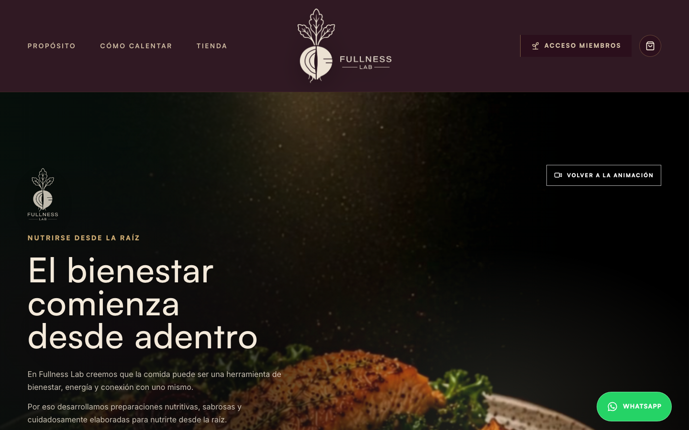
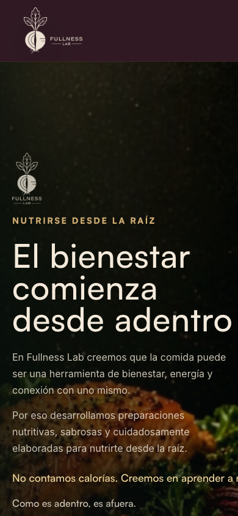

Se aplicaron las mejoras solicitadas por Cecilia para reforzar el carácter premium, saludable y conceptual de Fullness Lab: logo oficial, color marfil, presencia de betarraga, textos aprobados, oferta comercial y ficha nutricional de menús.
08-06Correo Mejoras
0,5 UFInfraestructura
8 + 2 UFAlcance contratado
R2 + SupabaseMedia y datos
Fuentes revisadas
Solicitudes consideradas.
Correo “Mejoras”
Correo enviado el lunes 8 de junio de 2026 por Cecilia. Solicita corregir protagonismo del logo, reemplazar blanco por marfil, reescribir hero, incorporar isotipo, usar textos de propósito/oferta/footer y reforzar el concepto “nutrirse desde la raíz”.
Aplicado
WhatsApp y adjuntos
Se revisó el chat exportado “WhatsApp Chat - María Cecilia Salas Vergara”. El texto confirma coordinación de últimos ajustes, backoffice, información de producto y cambio de color/logo. Los audios quedan identificados como adjuntos, pero no se transcribieron por falta de motor local de transcripción.
Revisado parcialmente
Nota técnica sobre audios
No hay `ffmpeg`, Whisper ni librerías locales de reconocimiento de voz disponibles en este entorno. Por ese motivo, el informe se basa en el correo, mensajes escritos, archivos adjuntos entregados y lo implementado en el sitio/código.
Cumplimiento visual
Marca y logo.
Solicitud de Cecilia
Aplicación realizada
Estado
El logo estaba pequeño y demasiado blanco.
Se reemplazó por los logos oficiales marfil entregados por Cecilia. El header usa versión horizontal, con mayor tamaño, más aire y sin filtros que lo vuelvan blanco.
Aplicado
El isotipo de betarraga debía aparecer más.
La versión vertical marfil se usa en intro, hero, separadores, marcas de agua suaves, footer y favicon.
Aplicado
No usar blanco puro, sino marfil.
Se documentó y aplicó el color marfil `rgb(244, 234, 219)` para logo y sistema visual de marca.
Aplicado
El hero debía quedar después del header y ser más alto.
Se ajustó la reserva de altura del header, se eliminó la franja clara entre header y hero, y el hero conserva altura suficiente para los slugs inferiores.
Aplicado

Evidencia desktop: logo oficial marfil con mayor presencia, hero pegado al header y sistema visual de raíz.

Evidencia mobile: logo marfil legible sin tapar el hero.
Copy aprobado
Mensajes integrados.
Hero
Se incorporaron los ejes: “Nutrirse desde la raíz”, “El bienestar comienza desde adentro”, “No contamos calorías. Creemos en aprender a nutrirse.” y “Como es adentro, es afuera.”
CTA actualizado: “Explorar Fullness Lab”, dirigido a propósito.
Nuestro propósito
Se estructuró una sección de propósito con los cuatro bloques solicitados: Nutrición consciente, Cocina antiinflamatoria, Bienestar integral, Ciencia y sabor.
Oferta Fullness Lab
Se agregaron tres caminos comerciales: Menús preparados, Meal Prep y Talleres. Menús baja a tienda; Meal Prep y Talleres van a WhatsApp por no estar desarrollados como secciones propias.
Footer
Se reescribió con tono institucional: Fullness Lab nace desde pequeñas decisiones sostenibles y cierra con “Nutrirse desde la raíz.”
E-commerce y producto
Información nutricional y recetas.
Solicitud
Aplicación realizada
Evidencia técnica
Al hacer click en un menú debe abrirse un lightbox.
La tarjeta abre una vista rápida con características nutricionales, receta resumida, agregar al pedido y enlace a detalle.
`ProductQuickView` en `src/main.jsx`.
Cada menú debe tener página propia por slug.
Se implementó ruta `/producto/:slug` dentro de la SPA. La página muestra imagen, ingredientes, detalle nutricional, receta/pasos y botón de agregar al carro.
`getProductPath`, `getProductSlugFromLocation` y `ProductDetailPage`.
Ingredientes y contenido nutricional deben cargarse desde backoffice.
El backoffice administra ingredientes, descripción nutricional, características, detalle nutricional, datos JSON, receta resumida y pasos.
`src/lib/menu-items.js` y formulario de menús.
Debe quedar registrado en Supabase.
Se agregó migración para `nutrition_highlights`, `nutrition_detail`, `recipe_summary` y `recipe_steps`; se conserva `ingredients`, `nutrition_description` y `nutrition_facts`.
Administra menú, foto, precio, ingredientes, nutrición y receta.
→
Supabase
Guarda `menu_items` con campos nutricionales y receta.
→
Sitio público
Muestra tienda, lightbox y página individual por slug.
Base de datos
Campos relevantes de `menu_items`.
Campo
Tipo
Uso
slug
text
URL de producto individual.
ingredients
text[]
Lista de ingredientes del menú.
nutrition_description
text
Resumen nutricional editorial.
nutrition_highlights
text[]
Características nutricionales breves para lightbox.
nutrition_detail
text
Detalle nutricional para página individual.
nutrition_facts
jsonb
Macros o datos nutricionales estructurados.
recipe_summary
text
Receta/preparación resumida para lightbox.
recipe_steps
text[]
Pasos resumidos para detalle de producto.
El seed de demo ya incluye tres menús con ingredientes, highlights nutricionales, datos JSON y pasos de preparación.
Alcance contratado
Validación contra propuesta aceptada.
Plan 1: Web premium - 8 UF
Diseño visual premium con identidad propia.
Hero, propósito, oferta, tienda, comunidad y formulario.
Uso de Satoshi para titulares/branding y Inter para textos largos.
Multimedia servida desde Cloudflare R2.
Publicación y estructura responsive.
Cubierto
Plan 2: Base e-commerce - 2 UF
Tienda pública con productos desde Supabase.
Carrito funcional en memoria.
Backoffice inicial para menús.
Detalle de producto por slug.
Estructura preparada para pago online.
Cubierto base
Fuera de esta entrega
El checkout productivo, Mercado Pago real, suscripciones recurrentes, DTE/boletas automáticas y plataforma clínica de seguimiento corresponden a activaciones o etapas posteriores. El pago sigue fuera de integración productiva hasta contar con credenciales y sesión final.
Infraestructura
Costo mensual corregido.
Cloudflare R2
Nube multimedia para logos, imágenes y recursos pesados, evitando depender del bundle principal del sitio.
Supabase
Base Postgres, Auth, permisos RLS, backoffice de menús y almacenamiento de fotos de producto.
Costo mensual de infraestructura
0,5 UF mensual
Servidor, base de datos, almacenamiento multimedia y continuidad básica de infraestructura. No corresponde a 2 UF; el soporte/mejora continua de 1 UF es opcional según propuesta.
Estado final
Resumen de aplicación.
Área
Resultado
Estado
Logo marfil oficial
Subido a R2, aplicado en header y sistema visual.
OK
Tipografía
Satoshi + Inter mantenidas en sitio e informe.
OK
Textos de Cecilia
Hero, propósito, oferta y footer integrados.
OK
Oferta
Menús, Meal Prep y Talleres con CTAs definidos.
OK
Producto
Lightbox, detalle por slug y agregar al carro.
OK
Supabase
Schema versionado para ingredientes, nutrición y receta.